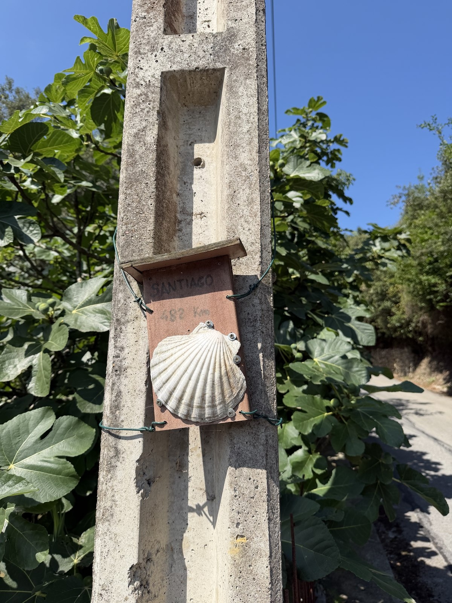

Q3 Metrics

So I am reading this book called 101 Essays That Will Change the Way You Think by Brianna Wiest. I’ve seen the cover a million times, and it’s an incredibly popularized book. You’d probably recognize it too. In fact, even though I don’t think I’ve read it before, I am getting a weird sense of deja vu.
Anyway.
I was reading the essay titled “101 things more worth thinking about than whatever is consuming you.” There were a lot of good ones in the mix that resonated with me:
-
What will you create today, what food will you eat, and who will you connect with?
It’s good food for thought. Maybe those three questions are really the only important ones we need to be answering everyday.
-
What does enough mean to you? (note: Fulfillment is a product of knowing what ‘enough’ is. Otherwise you will be constantly seeking more).
This for sure was a good reminder for me, a constant over achiever in the most annoying sense. Deciding what ‘enough’ is not only can help us outline our goals more concretely, make a plan of action on how to get there, but also know at what point we can sit back and finally take a much deserved break. If you fail to set the finish line, the race will only end when you collapse in burn out. I’ve sure been there before.
-
How do you want to quantify this year?
This one caught me completely off guard. I’ve written before about my New Years Resolutions I’ve made for myself the past few years and how I have gone about marking them off my bucket list. I was counting the number of books I’d read, the number of countries I’ve gone to, the class I took, the languages I learned, the miles I ran. But this year, ‘how to quantify this year’? I don’t even know where to begin…
I left the company I had been bootstrapping for four years. I moved across the world to San Francisco and learned more and worked harder than I ever thought would be possible. I was in the national news for my research experiment and held meetings with the world’s smartest people. Then I was so depressed. I was incredibly unhappy and lonely. Then I dragged myself out of it. I quit my job, sold my apartment, stored my belongings, and left the country. I walked across Spain and then went on vacation with a boy I love.
I 10x surpassed anything I thought I was capable of within the first few months of the year and kept going. When I take a second to look back on it, I realize that, goddamn, I’ve really done it all and I’m still standing, and it’s only September.
I’ve returned to San Francisco and I found a new apartment and a new job and I’m ready to try it out all over again. I feel more grounded, and I feel more clarity towards what I want out of this take two, this next stage in my life. There is so much uncertainty, and maybe it all ends up shit, or maybe it all ends up perfect. Realistically it will end up somewhere in between.